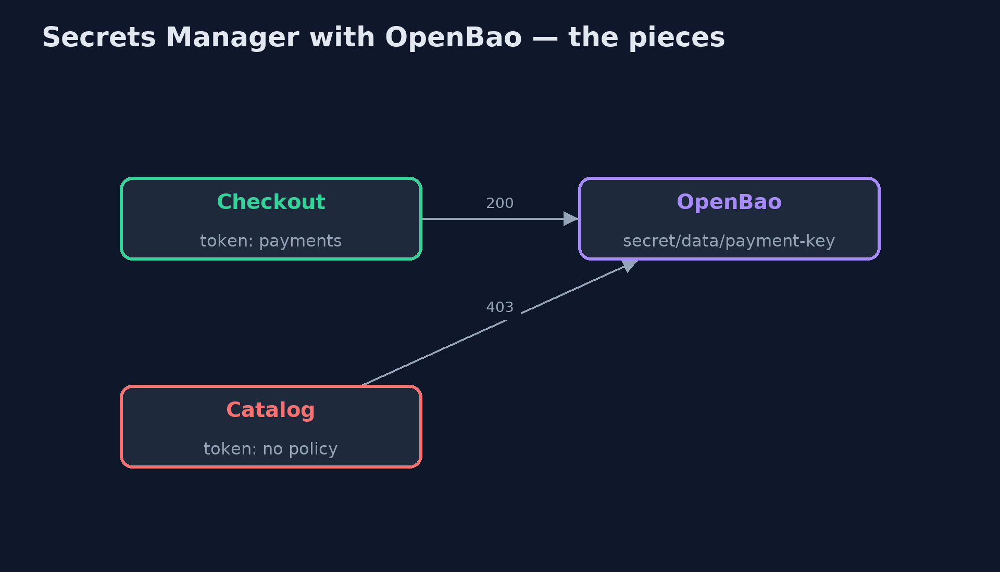
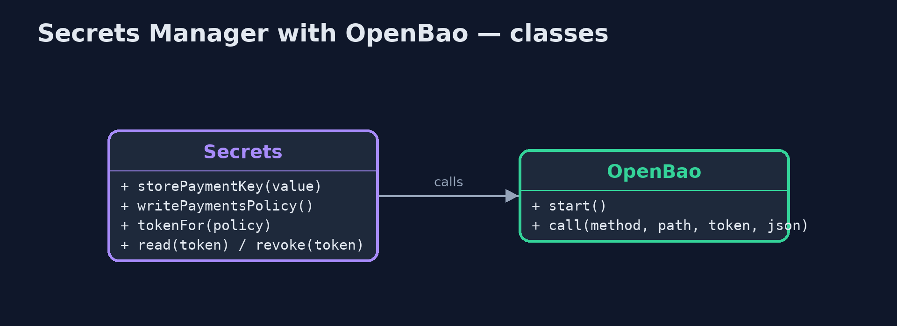
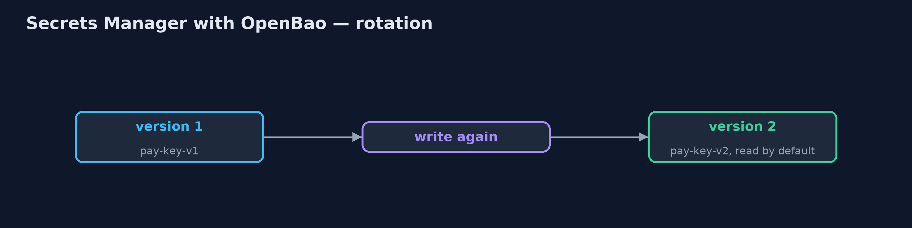
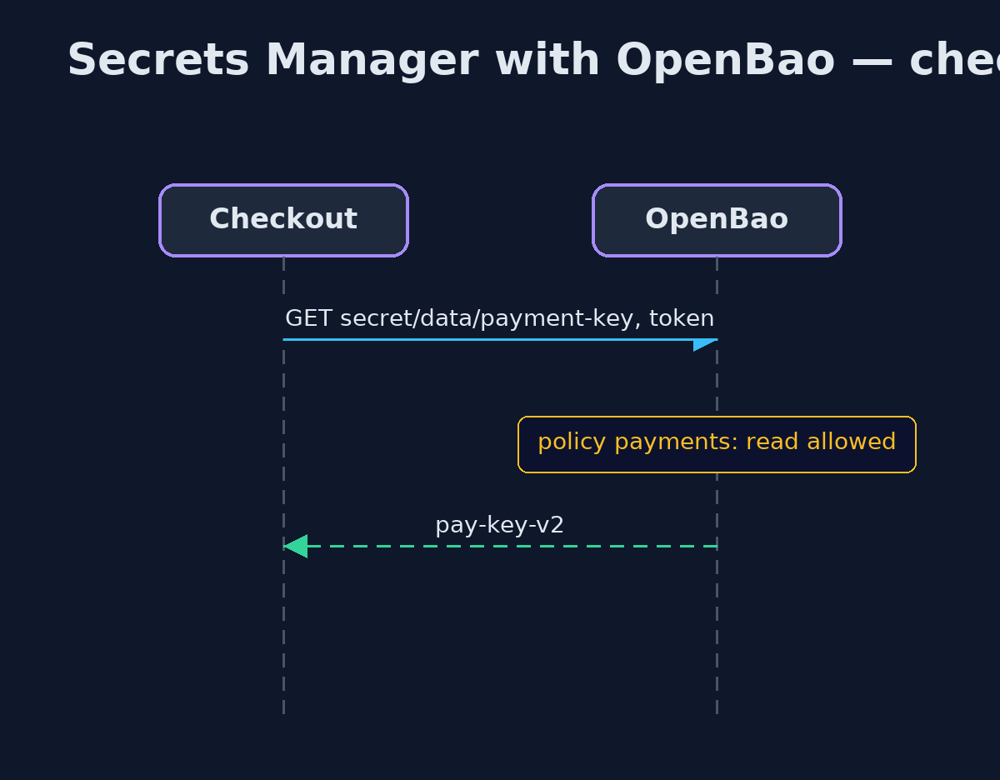

Secrets Manager with OpenBao Pattern
src/main/java/com/jk/explore/secretsopenbao/
├── OpenBao.java A real OpenBao server, the open-source fork of HashiCorp Vault, in a container that this demo starts and stops itself
├── OpenBaoSecretsDemo.java The five acts, against a real OpenBao server started and stopped by this program
└── Secrets.java The shop's side of OpenBao: store and rotate the payment key, write a policy, give each service its own token, read with a token, and revoke a tokenKeep the payment key in a real OpenBao server, the open-source fork of HashiCorp Vault: a policy decides which service may read it, each service has its own token, the key is versioned for rotation, and a leaked token is revoked at once.
This is the real-infrastructure version of the Secrets Manager pattern. The plain Java version, a separate project in this category, keeps secrets in a map with grants. Here a real OpenBao server holds them, started in a container by the demo itself, and the demo talks to it over its HTTP API.
OpenBao is the open-source fork of HashiCorp Vault, run by the Linux Foundation. It keeps Vault's API and concepts: a key-value store with versions, policies written as rules over paths, and tokens that carry policies and can be revoked. It is used here rather than Vault because Vault is no longer open source: since 2023 it is published under the Business Source License.
The idea in everyday terms
Think of a bank's safe-deposit room. Keys to the boxes are not handed out freely: each person gets a card that opens only the boxes on their list, and a lost card is cancelled at the desk at once. When a box's lock is changed, the old combination is kept on file for a while, in case someone still needs it.
The scenario
The online store's payment key was written in a configuration file committed with the code and built into three services. Everyone who could read the repository could read it, and changing it meant rebuilding every service.
Run
This project needs a running container runtime, such as Docker Desktop: the demo starts a real OpenBao 2.7.0 server in a container and removes it again. Without one, it prints a sentence saying what to start, rather than failing.
./gradlew runThe demo tells the story in 5 acts, each printing exact numbers that the tests check:
| Act | What it shows |
|---|---|
| 1. A key in the code | PAYMENT_KEY = "pay-key-v1" is built into three services and readable by anyone with the repository. |
| 2. Policies and tokens | The key is in OpenBao; checkout's token with the payments policy reads it (200), catalog's token without it is refused (403). |
| 3. Versions and rotation | Writing the key again makes version 2, which checkout now reads; version 1 stays readable for a grace period. |
| 4. Revoke a leaked token | Checkout's token leaks and is revoked: the attacker gets 403; checkout gets a new token and reads the key again. |
| 5. The bill | Every service needs a first credential to get a token, and dev mode is in memory with a root token; production needs storage, unsealing and HA. |
Test
./gradlew test2 tests in DemoRunsTest. Every result the demo prints is asserted against a real OpenBao server. Without a container runtime, the test is skipped rather than failed.
What the simulation got right, and what it left out
The plain Java version got the idea right: secrets out of code, granted per service, read at run time, rotated without a rebuild, and a manager every service now depends on. What it left out is how a real secrets manager does it. Access is a policy over paths, attached to a token each service holds, and a service without it gets HTTP 403. Secrets are versioned, so version 1 stays readable during rotation. A leaked token can be revoked at once, which the plain version could not show. And development mode, used here, is exactly what production must not be: in memory, unsealed and with a root token.
Technologies and versions
| Technology | Version | Used for |
|---|---|---|
| Java | 21 | the code (toolchain set in build.gradle) |
| Gradle | 9.2.1 (wrapper) | build and run, nothing to install |
| JUnit | 5.10.2 | the tests |
| OpenBao | 2.7.0 (container image) | the secrets server: KV v2, policies, tokens |
| Java HttpClient | JDK 21 | calls OpenBao's HTTP API directly |
| Testcontainers | 2.0.5 | starts and stops OpenBao from the demo |
| Docker | 24 or later | runs the container |
| videokit | repository tool | the narrated video and animation: Piper en_US-amy-medium, speed 0.8, longer pauses (the approved amy-slow voice) |
Learning Material
| Document | What it is for |
|---|---|
| Dependencies | what the framework and infrastructure are, and why they are here |
| Problem statement | the situation and what the project must show |
| Prerequisites | what you need to know first |
| Secrets Manager with OpenBao, explained | the acts in prose |
| Session guide | a one-hour lesson with exercises |
| Animated walkthrough | the acts step by step, narrated |
| Spec | what this project must be true of |
The pattern in one picture
Tokens carry policies; policies guard paths.

Where each piece sits
Each method is one HTTP call.

How the data moves
Versions overlap, then the old one retires.

Who calls whom, in order
The token is checked against the policy.

Video
video/secrets-manager-with-openbao-pattern-explained.mp4 (with .m4a audio and .srt subtitles) is built by video/build_video.sh. Rendered media is not committed.
What it costs
- Secret zero. Each service still needs a first credential to get its token; use the platform's identity, such as AppRole or Kubernetes auth.
- Critical to run. Production needs storage, unsealing and high availability, because services cannot start without it.
- Policies to maintain. Every service's access is a rule someone writes and reviews.
When this is too much
A learning project on one laptop can use environment variables. Once a secret guards real money or data, or is shared by several services, it belongs in a secrets manager.
Where you have already met this
- HashiCorp Vault, whose API OpenBao keeps.
- AWS Secrets Manager, Azure Key Vault and Google Secret Manager.
- Spring Cloud Vault, which reads Vault-compatible servers into Spring configuration.
Where this sits
This project is in security-design-patterns. It is the real-infrastructure version of the plain Java Secrets Manager project in the same category, which is left unchanged.